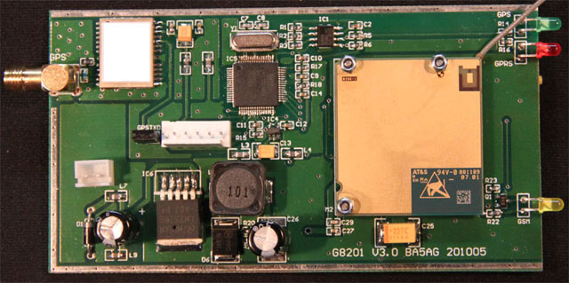

2013-01-18: v1.4d测试版
- 调整了登陆方式以适应服务器的改版。
2012-06-19: v1.4c测试版
- 调整了登陆方式以适应东京服务器的改版。
2011-08-19: v1.4b测试版
- 去掉了GPS失效时的短信报告。
2011-05-10: v1.4测试版
- 去掉了三个bug，这些bug使得盒子在某些特定条件下，可能不能迅速发现网络断线，从而造成大段时间的数据空白。
- 增加了附加信息的短信更改
2011-01-13: v1.3正式版
- 每两次轮换两个服务器均不能连接时，重新连接GPRS网络
- 在速度从10km/h降到2km/h以下时和从2km/h提高到10km/h时，发送一个数据。这样有助于在跟踪时清楚看到目标在路口停车和在路口起步
- 连接服务器后3分钟内GPS仍无法定位的，向机主发短信说明“GPS FAIL”
- 改进了发送数据条件计算方式，增加了角度和位置变化引起的数据发送
- 改进了GPS数据读的方式，与主程序的共享内存冲突时间更短
- 增加了ping机制。
- 改变了重新获得域名解析的方式。
 在G8201板上有一个6脚的插座，自左向右的定义为：